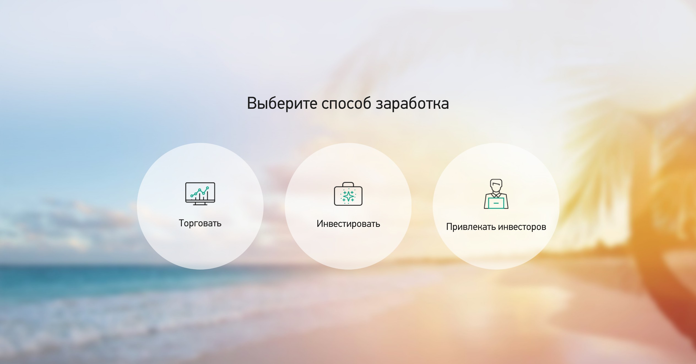
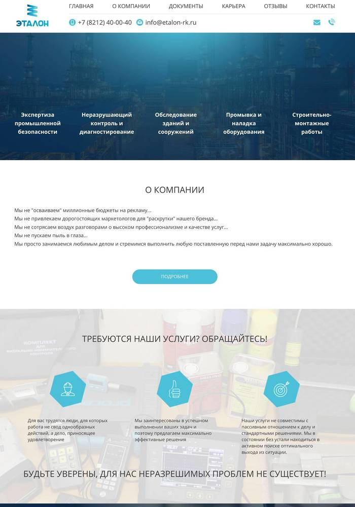
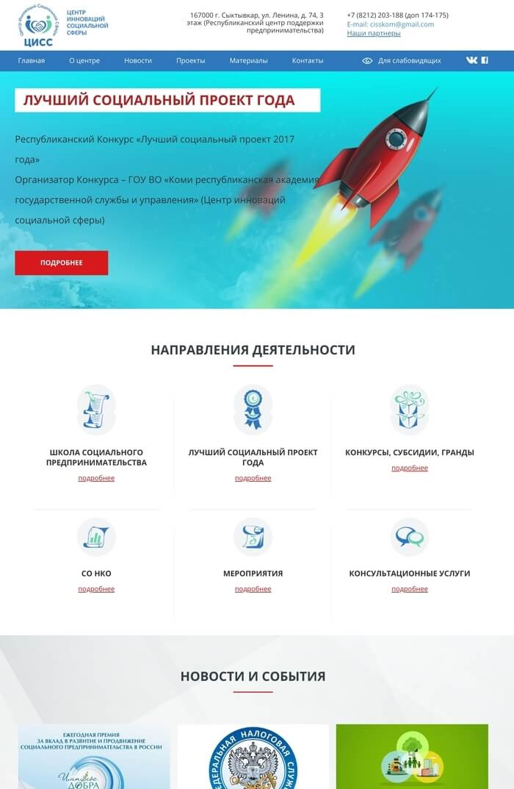
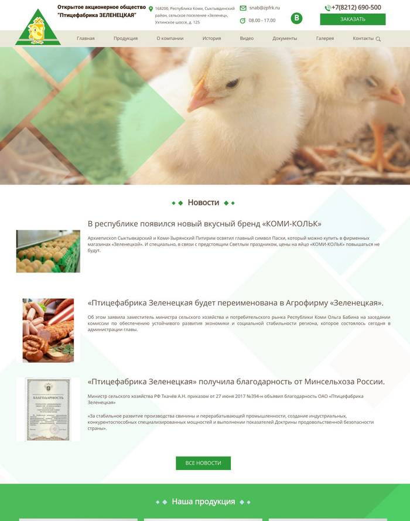
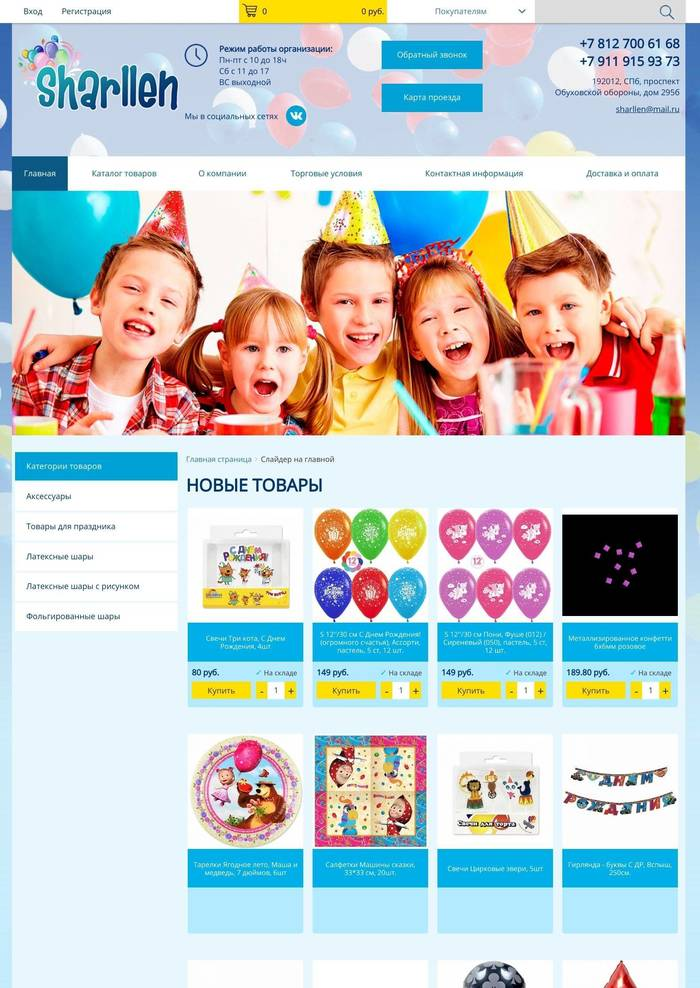

Выполненная работа - Верстка
Технологии - HTML, CSS, jQuery, Flexbox, Animate
Перейти на сайт

Тип сайта - Сайт-визитка
Выполненная работа - Верстка сайта, перенос на CMS
Технологии - HTML, CSS, jQuery, Flexbox, CMS GetSimple, PHP
Перейти на сайт

Тип сайта - Сайт-визитка
Выполненная работа - Верстка сайта, перенос на CMS
Технологии - HTML, CSS, jQuery, Flexbox, CMS GetSimple, PHP
Перейти на сайт

Тип сайта - Каталог товаров
Выполненная работа - Верстка сайта, перенос на CMS
Технологии - HTML, CSS, jQuery, Bootstrap 3, Flexbox, CMS OpenCart, PHP, MySQL
Перейти на сайт

Тип сайта - Интернет магазин
Выполненная работа - Верстка сайта
Технологии - HTML, CSS, jQuery, Bootstrap 3
Перейти на сайт